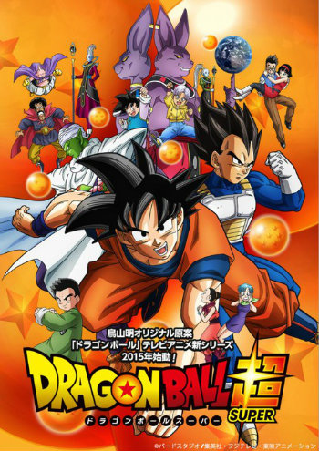

Welcome To Goku Section
Dragon Ball Super Webpage

Goku Base Form
Goku Super Saiyan

Goku Super Saiyan 2
Goku Super Saiyan 3

Super Saiyan GOD Goku
SSGSS Goku
Goku
From Wikipedia, the free encyclopedia
In this Japanese name, the family name is Son
Dragon Ball Super
ドラゴンボール超
(Doragon Bōru Sūpā)
Manga
| Written by | Akira Toriyama |
|---|---|
| Illustrated by | Toyotarou |
| Published by | Shueisha |
| English publisher | Viz Media |
| Demographic | Shōnen |
| Magazine | V Jump |
| Original run | June 20, 2015 – present |
| Volumes | 1 (List of volumes) |
Anime Television Series
| Directed by | Kimitoshi Chioka (#1–46)
Morio Hatano (#33–present) |
|---|---|
| Produced by | Osamu Nozaki
Naoko Sagawa Atsushi Kido Tomosuke Teramoto Satoru Takami |
| Written by | Akira Toriyama |
| Music by | Norihito Sumitomo |
| Studio | Toei Animation |
| Network | Fuji tc |
| English network | Toonami |
| Original run | July 5, 2015 present |
| Episodes | 61 (List of episodes) |
Son Goku (Japanese: 孫 悟空 Hepburn: Son Gokū?) is a fictional character and main protagonist of the Dragon Ball manga series created by Akira Toriyama. He is based on Sun Wukong, a main character in the classic Chinese novel Journey to the West. Goku is introduced in Dragon Ball chapter #1 Bulma and Son Goku (ブルマと孫悟空 Buruma to Son Gokū?), originally published in Japan's Weekly Shōnen Jump magazine on December 3, 1984, as an eccentric, monkey-tailed boy who practices martial arts and possesses superhuman strength. He meets Bulma and joins her on a journey to find the wish-granting Dragon Balls.
Initially believed to be an Earthling, he is later revealed to be a member of an extraterrestrial warrior race called the Saiyans with the birth name Kakarrot (カカロット Kakarotto?). As Goku grows up, he becomes the Earth's mightiest warrior and protects his adopted home planet from those who seek to harm it. Goku is depicted as carefree and cheerful when at ease, but quickly serious and strategic-minded when in battle. He is able to concentrate his Ki and use it for devastatingly powerful energy-based attacks, the most prominent being his signature Kamehameha (かめはめ波, lit. "Turtle Destruction Wave"), in which Goku launches a blue energy blast from his palms. Also pure of heart, Goku cannot be harmed by evil waves like the Devil Beam, and he is one of the few who can ride the magic cloud called Kinto'un (筋斗雲, lit. "Somersault Cloud", renamed "Nimbus" in Funimation's dub).
As the protagonist, Goku appears in most of the episodes, films, television specials and OVAs of the manga's anime adaptations (Dragon Ball, Dragon Ball Z, Dragon Ball GT and Dragon Ball Super), as well as many of the franchise's video games. Due to the series' international popularity, Goku has become one of the most recognizable and iconic anime characters in the world. Outside the Dragon Ball franchise, Goku has made cameo appearances in Toriyama's self-parody series Neko Majin Z, has been the subject of other parodies, and has appeared in special events. Most Western audiences were introduced to the adult version of Goku appearing in the Dragon Ball Z anime, itself an adaptation of Dragon Ball manga volumes 17-42, as opposed to his initial child form, due to the limited success of the first series overseas. Goku's critical reception has been largely positive and he has been recognized as one of the greatest manga and anime characters of all time.
Appearances
In Dragon Ball

Goku first appears in Dragon Ball as a monkey-tailed child adopted by the hermit Gohan. Before the series' narrative begins, he accidentally and unknowingly kills Gohan on a full-moon night when he temporarily transforms into the mighty Ōzaru (大猿, lit. "Great Ape") after staring at a full moon. However, Goku loses the ability when his friends cut off his tail. Living alone with an item known as a Dragon Ball which he keeps as a memento of Gohan, Goku befriends a teenage girl named Bulma. He joins her to find the seven Dragon Balls, which, when gathered, summon the wish-granting dragon Shenlong. They encounter the desert bandit Yamcha and two shapeshifters named Oolong and Puar, who also join their quest. Goku is later trained by the martial artist Kame-Sen'nin, alongside a Shaolin monk named Kuririn, who becomes his best friend. It is Kame-Sen'nin who gives Goku the magic cloud Kinto'un (as a reward for saving his pet sea turtle), which becomes Goku's primary source of flight travel across the world. Goku's first shown martial arts attack as a child is Jan ken (ジャン拳), three physical blows modeled after the hand signs in rock-paper-scissors. As a child, he also wields the Nyoi-bō (如意棒, lit. "Mind Stick", renamed "Power Pole" in Funimation's dub), a magic staff that extends and retracts on command; given to him by his late grandfather. However, Goku's signature attack is the Kamehameha wave, a technique learned from Kame-Sen'nin. The Kamehameha is a concentration of Ki, released as a concussive beam. Kame-Sen'nin spent about 50 years developing and perfecting the technique, but, as a child, Goku is able to understand and copy the technique immediately after only one demonstration. After training with the Earth's god, Kami, Goku learns to fly by virtue of the technique Bukū-jutsu (舞空術, lit. "Air Dance Technique") and uses the Kinto'un less frequently for flight travel. While participating in the Tenkaichi Budōkai (天下一武道会?, lit. "Strongest Under the Heavens Martial Arts Tournament") that attracts the most powerful fighters in the world, Goku battles foes, later turned allies, such as Tenshinhan and Chaozu, as well as the Namekian Piccolo. After becoming the runner-up champion of the 21st and 22nd tournaments, Goku finally wins in the 23rd with Piccolo's defeat, and marries Chi-Chi soon after.
Five years later, Goku meets his evil older brother Raditz and sacrifices himself to defeat Raditz after he learns about his heritage. Goku comes from a race of extraterrestrials called Saiyans (サイヤ人 Saiya-jin?), himself having been sent from their home planet to prepare Earth for sale on the intergalactic market by destroying all its life. While Grandpa Gohan was taking care of him, Goku suffered a severe head injury and forgets his mission to conquer Earth. In order to fight the Saiyans invading Earth, Goku trains with Kaiō-sama in the after-life. He teaches Goku the Kaiō-ken (界王拳, lit. "World King Fist"), which multiplies his ki and strength for an instant, but with possible strain to the body. It is also from Kaiō-sama that Goku learns his most powerful attack: the Genki-Dama (元気玉, lit. "Energy Sphere", renamed "Spirit Bomb" in Funimation's dub), an energy sphere created by gathering ki from surrounding animals, nature and humans. After being revived by the Dragon Balls, Goku faces off with the Saiyan prince Vegeta, who eventually becomes another ally. On his journey to Planet Namek in order to aid his friends in gathering the Namekian Dragon Balls to revive the ones killed by the Saiyans, Goku fights the galactic tyrant Freeza, who destroyed the Saiyans' home planet and nearly the entire race. During his epic battle with Freeza, Goku becomes the first Saiyan in a thousand years to transform into a Super Saiyan (超サイヤ人 Sūpā Saiya-jin).
After defeating Freeza and barely escaping the destruction of Namek, Goku learns a teleportation skill called Shunkan Idō (瞬間移動, lit. "Instant Teleport", renamed "Instant Transmission" in Funimation's dub), taught by the inhabitants of the planet Yardrat. However, Goku contracts a heart virus whereof the time-traveler Trunks warns him, but recovers after taking medicine provided by Trunks. Later, Goku trains his first son Gohan to be his successor and sacrifices himself again during the battle against the evil life-form Cell. Goku is temporarily resurrected on Earth seven years later and meets his second son Goten. Goku also battles Vegeta again after Vegeta falls under the control of the wizard Bobbidi. Shortly after, he is drawn into a battle for the universe against the monster Majin Boo. Despite having mastered two new Super Saiyan transformations, Goku teaches Goten and Trunks to take his place. After his life is permanently restored, Goku attempts to fuse with Gohan in order to defeat Boo, but this fails when the latter is temporarily absorbed by Boo and so he persuades the newly arrived Vegeta to fuse with him, creating Vegetto (ベジット Bejitto, "Vegerot" in Viz Media's manga translation). Eventually, Goku destroys Boo with a Genki-Dama attack. Ten years later, during another Tenkaichi Budōkai with fighters from all over the world, Goku meets Oob, Boo's human reincarnation, and leaves with him, intending to train him as the new protector of Earth.
In Toriyama's films and Dragon Ball Super
After defeating Boo, Goku meets a new opponent known as Beerus, the God of Destruction. An alternative, more innately powerful form called Super Saiyan God (超サイヤ人ゴッド Sūpā Saiya-jin Goddo) is reached by Goku in the canonical film Battle of Gods. Though the temporary transformation wears off, Goku manages to harness its godly powers in his base form. In its sequel film Resurrection 'F', Goku manages to achieve a blue-haired evolution of Super Saiyan God under Whis's tutelage, known as the Super Saiyan God Super Saiyan (超サイヤ人ゴッドSS（スーパーサイヤ人ゴッドスーパーサイヤ人） Sūpā Saiya-jin Goddo Sūpā Saiya-jin, abbreviated as "Super Saiyan Blue"), which Goku uses to battle the newly-revived Freeza. These forms also appear in Dragon Ball Super and its manga tie-in, which is being overseen by Akira Toriyama himself. Afterwards, Goku and his friends participate in another fighting tournament but set between two Gods of Destruction. Although Goku gives up after fighting his opponent, Hit, his team ends up winning the tournament. Later, Goku encounters an evil look-alike of himself known as "Goku Black", who is terrorizing Future Trunks' timeline.
In Other Media
n the film Fusion Reborn, Goku and Vegeta use the Metamorese Fusion Dance, which creates Gogeta (ゴジータ Gojīta), who sports slight visual differences from their previous merger. In the anime-only sequel, Dragon Ball GT, Goku is transformed into a kid by an accidental wish made by his old enemy Pilaf using the Black Star Dragon Balls while Pilaf was about to wish to take over the world. Goku, Trunks and his own granddaughter Pan travel the universe to search for the Black Star Dragon Balls and return them to Earth. Here, Goku defeats the evil Tuffle Baby, Super Android #17, and the evil Shadow Dragons. His final challenge is against Omega Shenron, whom he destroys using the Genki-Dama. Goku leaves with the original form of Shenlong, but not before saying his goodbyes to his friends on Earth. He then appears 100 years later at the next martial arts tournament as an adult, where he watches a battle between Goku Jr., his descendant, and Vegeta Jr., Vegeta's descendant. An elderly Pan sees him, but he quickly departs.
Conception and creation
Goku, and Dragon Ball in general, evolved from one of Akira Toriyama's earlier one-shot series called Dragon Boy. In this story, the protagonist looks a lot like Goku but has a pair of wings. When Toriyama created Dragon Ball, he was inspired by Journey to the West. To be creative with the idea of Sun Wukong, Toriyama designed Goku as a human boy with a monkey's tail, rather than a complete simian, because the tail would give the character a distinguishing feature. He later stated that the tail was a pain to draw, hence why he had it get cut off early on. Toriyama did not initially plan to make Goku an alien, it was not until the introduction of fighters from other planets that he established him as a Saiyan. Goku was given the ability to teleport to any planet in seconds, so that Toriyama could increase the pace of the story.
Wanting Dragon Ball to have a Chinese appearance, Toriyama used the color of the robes worn by Buddhist monks for Goku's dōgi. During the early chapters of the manga, Toriyama's editor, Kazuhiko Torishima, commented that Goku looked rather plain. Toriyama had given him simple clothes on purpose because it was a fighting manga, so to combat this he added several characters like Kame-Sen'nin and Kuririn, and created the Tenkaichi Budōkai to focus the storyline on fighting. To defy the assumption that Goku would win the tournaments, Toriyama made him lose the first and second but win the third. Toriyama also mentioned Torishima wanted Goku to form a relationship with Bulma but this was never applied to the series.
Toriyama's editor was initially against having Goku grow up, saying it was uncommon to have the protagonist drastically change in manga, however, he gave in when Toriyama threatened that he would not be able to continue the series if the character did not. Toriyama later stated he had him grow up as a means to make drawing the fight scenes easier. When Toriyama thought up the Super Saiyan concept, he felt the only way to show Goku's massive power up was to have him transform. Initially he was concerned that the facial expression looked like that of a villain, but felt that since the transformation was brought about by anger it was acceptable. With the conclusion of the Cell arc, Gohan was intended to replace his father as protagonist, but Toriyama decided that Gohan was unsuitable for the role.
Dragon Ball GT chief character designer Katsuyoshi Nakatsuru said he agonized over designing Super Saiyan 4 Goku, which was the idea of the show's producers, questioning whether it was necessary to go further with the transformations. Because Super Saiyan 4 is brought about while in a Saiyan's Ōzaru ("Great Ape") form, he made the hair more "wild" and covered Goku's body in red fur. There was only a single final draft of the character, although Nakatsuru did consider making the hair blonde, he ended up choosing black as it provides more contrast with the red fur.
Design
Goku is usually recognized by his unique hairstyle, which does not change in length except in his Super Saiyan forms, where his hair changes in color and length according to the form he takes. This is explained by Vegeta to be a common characteristic of full-blooded Saiyans. Goku's hair color changes from black to golden after ascending to a Super Saiyan, and his irises change from black to turquoise. In his god form, both his hair color and irises change from a Super Saiyan's golden to a deep red. In his Super Saiyan God Super Saiyan form, acquired when transforming into a Super Saiyan while in Super Saiyan God form, both his hair color and irises change into blue. Goku prefers dressing in a dōgi uniform to show his devotion to Earth, instead of the standard battle fatigues of his race; the only time he actually does wear these garments is during his training with Gohan before the Cell Games.
In his early childhood, Goku is introduced wearing a dark colored dōgi uniform with red wristbands and a white belt tied in a bow. Throughout the majority of the series, however, Goku is commonly seen wearing a red-orange dōgi uniform with a navy blue short-sleeved undershirt, blue wristbands, a blue belt tied in a knot, and striped boots. Goku also often wears the encircled kanji of his training masters on the front and back of this uniform; the first being Kame-Sen'nin's "kame" (亀?, meaning "turtle");[41] the second being Kaiō-sama's, "kaio" (界王?, meaning "world king"); and the third being his own "Go" (悟?, meaning "wisdom" or "enlightenment"). Eventually, Goku stops wearing a kanji and replaces his knot-tied belt with a blue sash.[43] In Dragon Ball GT, he is seen wearing a multi-colored dōgi that consists of a blue fold-over shirt, a white knot-tied belt, yellow pants, pink wristbands, white stockings and black shoes, and he also has a darker skin complexion.[44] In Dragon Ball Super, Goku alternates between wearing his signature red-orange and blue dōgi with his own kanji again, and a new dōgi uniform consisting of an orange fold-over shirt and matching pants with blue wristbands, blue boots and a blue belt tied in a knot at his side (which first debuted in the film Resurrection 'F'); given to him by his new teacher Whis.
Appearances in other media
Goku has appeared in various other media including an unofficial Taiwanese live-action film and an unofficial Korean live-action film.[94] He was portrayed by Justin Chatwin in the 2009 20th Century Fox feature Dragonball Evolution.[95] Goku has also appeared in almost every Dragon Ball licensed electronic video game, including crossover games such as Jump Super Stars, Jump Ultimate Stars and Battle Stadium D.O.N. In 1992, Goku was featured in the interactive game Dragon Ball Z: Get Together! Goku World, in which Goku and his gang travel back in time to review events in the Dragon Ball timeline and interacts with his younger self. In December 2007, Goku made a guest appearance in avatar form in the MMORPG Second Life for a Jump Festa promotion titled Jumpland@Second Life. Goku also appears in the Dr. Slump and Arale-chan video game for the Nintendo DS.
Goku has been the subject of, and is mentioned in, various songs. "Son Goku Song" and "Gokū no Gokigen Jānī" feature Goku as a child singing about himself. During his adult years, the song "Aitsu wa Son Gokū" by Hironobu Kageyama, where Kageyama praises everything about Goku, and the duet "Ore-tachi no Energy" feature words spoken by the character. For the release of the single of the Dragonball Evolution international theme song "Rule", Toriyama supplied CD artwork of singer Ayumi Hamasaki dressed as Goku.
Goku has been used in Japanese public service announcements aimed at children. In June 1988, Goku and other Dragon Ball characters were featured in two PSA short films. The first, in which Goku is taught the importance of obeying traffic safety by others, is entitled The Goku Traffic Safety (悟空の交通安全 Gokū no Kōtsū Anzen?). The second is called The Goku Fire Fighting Regiment (悟空の消防隊 Gokū no Shōbō-tai?), in which he teaches two children the importance of fire safety.
Goku has made guest appearances in various Japanese television shows and manga. In 2005, Goku appeared in the Toriyama parody manga Neko Majin Z where he is the sensei of the main character Z. On September 15, 2006, in celebration of the 30th anniversary of Kochira Katsushika-ku Kameari Kōen-mae Hashutsujo, the special manga Super Kochikame (超こち亀 Chō Kochikame?) was released. The chapter entitled This is the Police Station in front of Dragon Park on Planet Namek (こちらナメック星ドラゴン公園前派出所 Kochira Namekku-sei Dragon Kōen-mae Hashutsujo?) has Ryotsu Kankichi travel to planet Namek and try to issue Freeza a citation and scold he and Goku for parking their ships illegally.[106] Goku and other Dragon Ball characters join the cast of One Piece in the 2006 crossover manga Cross Epoch.[107] He also appears in a single panel of Toriyama's 2013 manga Jaco the Galactic Patrolman, which is set before the events of Dragon Ball.[108] The collected tankōbon volume of Jaco features the bonus story Dragon Ball Minus: The Departure of the Fated Child, depicting how and why Goku's father and mother, Gine (ギネ?), sent him to Earth.
Goku has been the subject of various parodies. In the episode Career Day of Takeshi's Castle, known in the United States as MXC, the hosts Beat Takeshi and Sonomanma Higashi dressed as popular anime characters, one as Goku as a child, the other as Doraemon. Weekly Shōnen Jump's Gag Special 2005 issue, released on November 12, 2004, featured a Bobobo-bo Bo-bobo one-shot Dragon Ball parody manga, a retelling of the first fight between Goku and Vegeta.[112] In chapter #179 of the Yakitate!! Japan manga, Kawachi executes a Genki-Dama parody called a Shinrai-Dama (信頼玉?, lit. "Trust Ball") on the character Katsuo.
Goku regularly appears on Fuji TV. In 2003, Goku appeared in the interactive feature Kyutai Panic Adventure! (球体パニックアドベンチャー! Kyūtai Panikku Adobenchā!?, "Orb Panic Adventure!"), which was featured exclusively at the Fuji TV headquarters in the Kyutai (orb) section. In this, Freeza attacks a visiting tourist, blasting the orb section free from the rest of the Fuji TV building. Goku fights Freeza over the real life aqua city of Odaiba. In 2004, a sequel called Kyūtai Panic Adventure Returns! (球体パニックアドベンチャーリターンズ! Kyūtai Panikku Adobenchā Ritānzu!?, "Orb Panic Adventure Returns!") was produced.[116] On March 25, 2006, Goku and Freeza appeared in an original animated short film in the IQ Mirror Mistake 7 (ＩＱミラーまちがい７ Aikyū Mirā Machigai Nana?) segment of the Japanese game show IQ Supplement (IQサプリ IQ Sapuri?). On April 7, 2007, Goku and Fuji TV announcer Masaharu Miyake were commentators on the anime segment in the Nippon Ijin Taishō (日本偉人大賞?, "Japan Great Man Awards") titled Saikyō no Ijin ha Dare? (最強の偉人は誰？?, "Who is the Strongest Hero?"). The segment featured a special tournament to decide who was the greatest person in Japanese history. During the intermission, Goku promoted the coming release of R2 Dragon Ball DVDs.
Since the U.S. debut of Dragon Ball Z in 1996, Goku has appeared in American pop culture. He was featured in an issue of Wizard magazine in which he and Superman fought a hypothetical battle and won. In the Codename: Kids Next Door episode "Operation: R.E.P.O.R.T", Numbuh Four's version of the story is a parody of the Goku and Freeza's battle in Dragon Ball Z. Goku appears in Robot Chicken in a sketch entitled A Very Dragon Ball Z Christmas, where Goku and Gohan fight an evil Mrs. Claus with Santa's reindeer, in an attempt to save Christmas. The Saturday Night Live sketch TV Funhouse titled Kobayashi depicts real-life hot-dog-eating champion Takeru Kobayashi as able to transform into a Super Saiyan as he prepares to eat hot dogs; Goku appears briefly near the end. Goku is referenced in the songs "Goku" and "Anime" by Soulja Boy Tell 'Em, where he brags that he looks and feels like Goku. Goku appears in a parody of the film Moneyball on an episode of Mad entitled Money Ball Z, in which Billy Beane drafts Goku and a couple of other Dragon Ball characters into the Oakland A's.
The use of the Kamehameha attack became an Internet meme which started with Japanese schoolgirls photographing themselves apparently using, and being affected by, this attack.[125][126] It has also attracted considerable media attention in France, Germany, as well as in many Spanish-speaking countries in South America